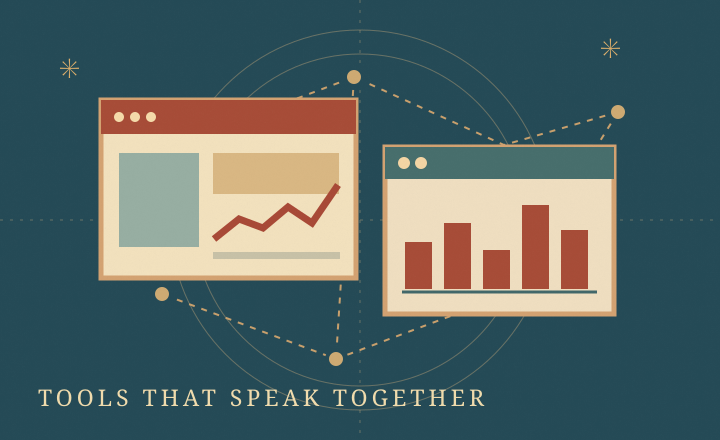

01Working sample
Keep every inquiry in view.
Find requests, see what needs a reply, and move jobs through their stages.
Customer & job board / Dashboarda
Try the free sampleThe tool bench / Free to explore
See what a small, useful tool could do for your business. Start with a working sample, then tell me what would make it useful for you.
No signup. No business data needed.

01 / Working sample
Explore a service business's job board. Add a sample inquiry, change its stage, and watch the overview update.
Fictional business and records. Changes last until you reset or reload this page. No inbox or customer system is connected.
Oak & Pine / Sample service business
All names and requests below are fictional. On smaller screens, scroll the table to see each stage.
| Customer | Request | Came from | Stage |
|---|---|---|---|
| Jamie Cole | Seasonal yard cleanup | Website form | New inquiry |
| Morgan Lee | Gutter clearing | Phone inquiry | Quote sent |
| Avery Reed | Small fence repair | Email inquiry | Scheduled |
| Casey Brooks | Hedge trimming | Website form | New inquiry |
| Riley Quinn | Deck wash | Phone inquiry | Scheduled |
| Taylor Lane | Leaf removal | Referral | Completed |
Showing 6 fictional inquiries.
Make the useful part yours
Imagine this connected to the inquiries and tools you already use.
02 / Find your useful thing
The dashboard sample is ready to explore. For the other ideas, start a conversation about the workflow you want to improve.
Find requests, see what needs a reply, and move jobs through their stages.
Customer & job board / Dashboarda
Try the free sampleExplore how a form could update your tracker without another round of copying and pasting.
Connected records / SignalDesk
Talk about connecting my toolsTalk through a focused view of inbox items that need a decision or follow-up.
Inbox follow-up / Email Action
Talk about my inbox workflowExplore turning a short form into a consistent estimate, report, or other business document.
Document generation / HTML-to-PDF
Talk about my documentsDiscuss a recurring technical failure and what a useful diagnostic or maintenance check would cover.
Diagnostics / Agent Toolchain Canary
Describe something that's brokenTalk through the screens, connections, setup, and training a small custom application would need.
Custom applications / SaaS Starter
Talk about my application idea03 / A next step that fits
Start with what's happening and what should happen. We can scope a diagnosis and repair.
Configure the workflow, check the connections, and learn how to use it.
Clarify the need, agree the scope, and get a quote for a custom build.
Agree which maintenance, checks, and support would be useful after launch.